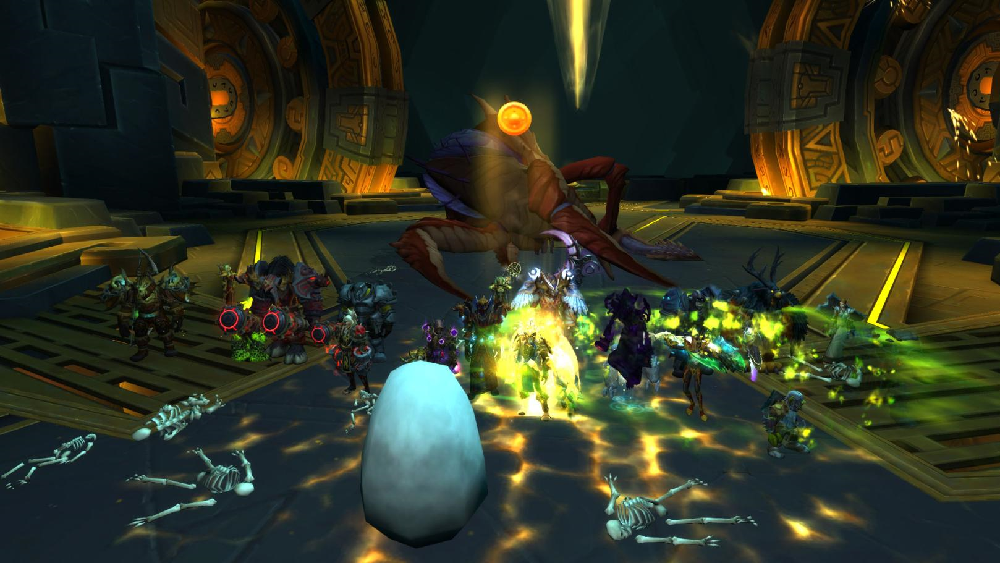

Sons of Perdition is a semi-casual Mythic raiding guild in the game World of Warcraft. We have been raiding since the begining of Ice Crown Citadel during the Wrath of the Lich King expasion. Originally an Alliance guild we transitioned to horde during the Mist of Pandaria expansion. Our raid team is led by Morsdea, a priest healer. We use discord for all voice communication. Beyond World of Warcraft, we also foster a friendly gaming community that enjoyes playing multiple games together.
 Sons of Perdition
Sons of Perdition